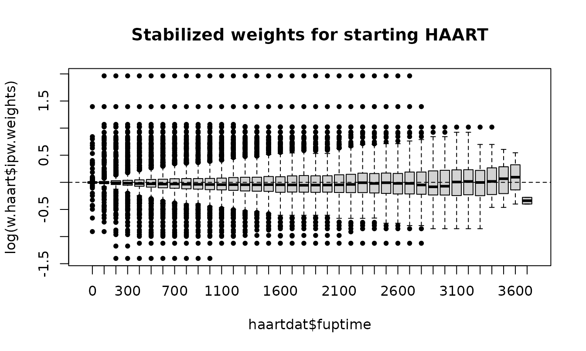
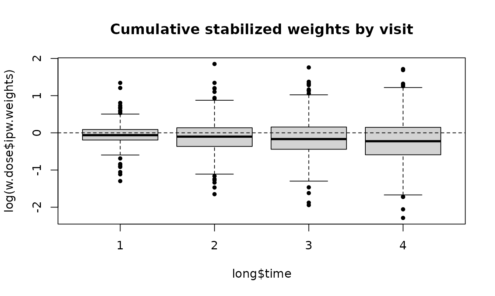

ipw estimates inverse probability weights: each person is weighted by the inverse of the probability of the exposure they actually received, given their confounders. In the weighted data, exposure no longer depends on the measured confounders, and a simple model of outcome on exposure, a marginal structural model (MSM), estimates the causal effect (Robins, Hernán & Brumback 2000; van der Wal & Geskus 2011).
An analysis has three steps:
-
Estimate the weights with
ipwpoint()(exposure measured once) oripwtm()(exposure that changes over time), or from your own probabilities withipwprob(). -
Check the weights with
summary()andipwplot(). -
Fit the MSM with the weights, and get
standard errors, preferably with
ipwboot().
| Function | Purpose |
|---|---|
ipwpoint() |
Weights for an exposure measured once (point treatment) |
ipwtm() |
Weights for an exposure that changes over time, and censoring weights |
ipwprob() |
Weights from probabilities you estimated yourself (new) |
ipwboot() |
Bootstrap standard errors that re-estimate the weights (new) |
ipwplot() |
Plot the distribution of the weights |
tstartfun() |
Interval start times for counting-process (Cox) data |
New in the development version. Sections marked New describe features added after ipw 1.3.2: count, gamma and log-normal exposures, smooth terms with mgcv, ATT and overlap weights,
type = "all"for categorical and survival exposures inipwtm(),ipwprob()andipwboot(). Existing calls give the same results as before.
1. Point treatment: a binary exposure
We simulate a confounder l, a binary exposure
a that is more likely at high l, and an
outcome y. The true causal effect of a on
y is 10.
set.seed(16)
n <- 1000
simdat <- data.frame(l = rnorm(n, 10, 5))
simdat$a <- rbinom(n, 1, plogis(simdat$l - 10))
simdat$y <- 10 * simdat$a + 0.5 * simdat$l + rnorm(n, -10, 5)ipwpoint() fits the exposure model (here a logistic
regression) and returns the weights. With numerator = ~ 1
the weights are stabilized: the marginal probability of
the exposure goes in the numerator, which keeps the correction but makes
the weights much less variable.
w <- ipwpoint(exposure = a, family = "binomial", link = "logit",
numerator = ~ 1, denominator = ~ l, data = simdat)
summary(w$ipw.weights)
#> Min. 1st Qu. Median Mean 3rd Qu. Max.
#> 0.4810 0.5127 0.5285 0.9095 0.6318 74.6994
ipwplot(weights = w$ipw.weights, logscale = FALSE, main = "Stabilized weights",
xlim = c(0, 8))Stabilized weights should have a mean close to 1. The exposure models are returned as well, so they can be checked like any regression:
coef(w$den.mod)
#> (Intercept) l
#> -9.6980874 0.9727157The weighted regression of y on a estimates
the causal effect; the unweighted regression is confounded by
l:
c(unweighted = unname(coef(lm(y ~ a, data = simdat))["a"]),
weighted = unname(coef(lm(y ~ a, data = simdat, weights = w$ipw.weights))["a"]))
#> unweighted weighted
#> 13.87050 10.64661For inference, the weighted model is usually fitted with robust standard errors, for example with the survey package as in the JSS paper; see section 7 for why the bootstrap is better.
msm <- survey::svyglm(y ~ a, design = survey::svydesign(~ 1, weights = ~ w$ipw.weights,
data = simdat))
cbind(estimate = coef(msm), confint(msm))["a", ]
#> estimate 2.5 % 97.5 %
#> 10.646610 8.311695 12.981525Unstabilized weights use
numerator = NULL (the default), and
truncation caps extreme weights at chosen
percentiles:
w.unstab <- ipwpoint(exposure = a, family = "binomial", link = "logit",
denominator = ~ l, data = simdat)
w.trunc <- ipwpoint(exposure = a, family = "binomial", link = "logit",
numerator = ~ 1, denominator = ~ l, data = simdat, trunc = 0.01)
rbind(unstabilized = summary(w.unstab$ipw.weights),
stabilized = summary(w$ipw.weights),
truncated = summary(w.trunc$weights.trunc))
#> Min. 1st Qu. Median Mean 3rd Qu. Max.
#> unstabilized 1.0000000 1.0046903 1.0482683 1.8260844 1.242464 155.300216
#> stabilized 0.4810000 0.5127181 0.5284768 0.9094652 0.631794 74.699404
#> truncated 0.4810092 0.5127181 0.5284768 0.7772294 0.631794 6.274768New: ATT and overlap weights
The weights above target the average treatment effect
(ATE): the effect if everyone versus no one were exposed. With
estimand = "ATT" the weights target the effect in
the exposed (exposed get weight 1, unexposed p/(1 - p)); with
estimand = "ATO", overlap weights, the
effect in the people whose exposure was most uncertain (exposed 1 - p,
unexposed p, all between 0 and 1). Here p is the fitted probability of
exposure.
fit.estimand <- function(estimand) {
wt <- ipwpoint(exposure = a, family = "binomial", link = "logit",
denominator = ~ l, data = simdat, estimand = estimand)$ipw.weights
c(effect = unname(coef(lm(y ~ a, data = simdat, weights = wt))["a"]),
max.weight = max(wt))
}
sapply(c(ATE = "ATE", ATT = "ATT", ATO = "ATO"), fit.estimand)
#> ATE ATT ATO
#> effect 10.64661 9.044102 10.5137145
#> max.weight 155.30022 154.300216 0.9935609The effect was simulated as constant, so all three estimands are 10 in truth, and the differences between the estimates are sampling noise. The ATT weights show why: unexposed people with a high probability of exposure get weights above 100, which makes that estimate unstable. Overlap weights never exceed 1, which helps when some people are almost always or almost never exposed. With an effect that differs between people, the three estimands differ in truth as well.
2. Point treatment: other kinds of exposure
Categorical and ordered exposures
For an exposure with more than two categories,
family = "multinomial" fits a multinomial logistic model
and family = "ordinal" a proportional-odds model (with
link = "logit", "probit",
"cauchit" or "cloglog").
set.seed(4)
cat.dat <- data.frame(l = rnorm(800))
eta <- 0.9 * cat.dat$l
cat.dat$dose <- cut(eta + rlogis(800), c(-Inf, -0.5, 0.8, Inf),
labels = c("low", "medium", "high"), ordered_result = TRUE)
w.ord <- ipwpoint(exposure = dose, family = "ordinal", link = "logit",
numerator = ~ 1, denominator = ~ l, data = cat.dat)
w.mult <- ipwpoint(exposure = dose, family = "multinomial",
numerator = ~ 1, denominator = ~ l, data = cat.dat)
rbind(ordinal = summary(w.ord$ipw.weights), multinomial = summary(w.mult$ipw.weights))
#> Min. 1st Qu. Median Mean 3rd Qu. Max.
#> ordinal 0.3728385 0.7198835 0.8864612 0.9986363 1.095597 5.308914
#> multinomial 0.3563447 0.7223290 0.8959666 1.0031794 1.063840 7.484257Continuous exposures
healthdat contains IQ, monthly income and a health score
for 1000 simulated people; IQ confounds the effect of income on health.
For a continuous exposure the weights use densities instead of
probabilities, so a numerator model is required.
data(healthdat)
w.gauss <- ipwpoint(exposure = income, family = "gaussian",
numerator = ~ 1, denominator = ~ iq, data = healthdat)
summary(w.gauss$ipw.weights)
#> Min. 1st Qu. Median Mean 3rd Qu. Max.
#> 0.01669 0.55729 0.72481 0.96870 0.93367 58.09496
coef(lm(health ~ income, data = healthdat, weights = w.gauss$ipw.weights))
#> (Intercept) income
#> 47.167435110 0.008022911New: skewed continuous exposures (gamma and log-normal)
Many exposures are positive with a long right tail, such as a dose or
a duration: most values are small and a few are very large. A normal
model is symmetric and fits that tail poorly, and the tail is where
weights become large. family = "gamma" (log link) and
family = "lognormal" (a normal model for the log of the
exposure) are meant for such exposures; both require positive values.
Below, the dose is log-normal given l, and the true effect
of one unit of dose on y is 1.
set.seed(8)
n.sk <- 2000
sk <- data.frame(l = rnorm(n.sk))
sk$dose <- exp(0.5 + 0.5 * sk$l + rnorm(n.sk, 0, 0.6))
sk$y <- sk$dose + 2 * sk$l + rnorm(n.sk)
c(mean = mean(sk$dose), median = median(sk$dose)) # right-skewed
#> mean median
#> 2.311130 1.655365
# weighted correlation of the dose (or log dose) with the confounder l
wcor <- function(x, w) cov.wt(cbind(x, sk$l), wt = w, cor = TRUE)$cor[1, 2]
fit.dose <- function(family) {
w <- ipwpoint(exposure = dose, family = family, numerator = ~ 1,
denominator = ~ l, data = sk, trunc = 0.01)
wt <- w$weights.trunc
c(cor.dose.l = wcor(sk$dose, wt), cor.logdose.l = wcor(log(sk$dose), wt),
effect = unname(coef(lm(y ~ dose, data = sk, weights = wt))["dose"]),
max.weight.untruncated = max(w$ipw.weights))
}
round(cbind(
unweighted = c(wcor(sk$dose, rep(1, n.sk)), wcor(log(sk$dose), rep(1, n.sk)),
unname(coef(lm(y ~ dose, data = sk))["dose"]), 1),
sapply(c(gaussian = "gaussian", gamma = "gamma", lognormal = "lognormal"), fit.dose)), 3)
#> unweighted gaussian gamma lognormal
#> cor.dose.l 0.564 0.333 0.256 0.171
#> cor.logdose.l 0.649 0.441 0.320 0.185
#> effect 1.529 1.265 1.244 1.172
#> max.weight.untruncated 1.000 1825.069 491.946 37.537Good weights make the exposure unrelated to the confounders, so the
table shows the weighted correlation of the dose (and of the log dose)
with l, next to the effect estimate and the largest weight.
The weights are truncated at the 1st and 99th percentiles
(trunc = 0.01), because a few extreme weights would
otherwise dominate a single estimate.
Without weights, the dose is strongly correlated with l
(about 0.56) and the estimate (about 1.53) is badly confounded. The
log-normal model, which matches how the dose was generated, removes most
of that correlation (about 0.17), gives the estimate closest to 1 (about
1.17) and has by far the most moderate weights: its largest untruncated
weight is about 38, against about 1800 for the gaussian model. The
gaussian model puts almost no probability on the long right tail, so the
few people with a high dose get huge weights; the gamma model lies in
between. None of the models removes the correlation completely here,
partly because truncation trades a little bias for stability.
Choose the family by looking at the exposure: if it is right-skewed
and looks bell-shaped after taking logs, use "lognormal";
if its spread grows with its mean, "gamma". Do not use them
for an exposure that is roughly symmetric: income in
healthdat (mean and median both about 2700) is modelled
well by "gaussian", and a log-normal model there gives a
few people with very low income enormous weights.
New: count exposures (Poisson and negative binomial)
For counts, such as a number of visits,
family = "poisson" fits a Poisson model and
family = "negbin" a negative binomial model (via
MASS::glm.nb) that allows more spread than the Poisson.
Here the true effect of each extra visit on y is 0.5.
set.seed(6)
cnt <- data.frame(l = rnorm(1000))
cnt$visits <- rnbinom(1000, size = 2, mu = exp(0.5 + 0.4 * cnt$l))
cnt$y <- 0.5 * cnt$visits + cnt$l + rnorm(1000)
c(mean = mean(cnt$visits), variance = var(cnt$visits)) # variance > mean
#> mean variance
#> 1.853000 4.483875
w.pois <- ipwpoint(exposure = visits, family = "poisson",
numerator = ~ 1, denominator = ~ l, data = cnt)
w.nb <- ipwpoint(exposure = visits, family = "negbin",
numerator = ~ 1, denominator = ~ l, data = cnt)
sapply(list(poisson = w.pois, negbin = w.nb), function(x)
c(effect = unname(coef(lm(y ~ visits, data = cnt, weights = x$ipw.weights))["visits"]),
max.weight = max(x$ipw.weights)))
#> poisson negbin
#> effect 0.3779291 0.5500115
#> max.weight 20.1565447 5.9796435The variance is clearly larger than the mean, so the negative binomial model is the better choice for these data.
New: smooth terms with mgcv
A regression assumes a straight-line effect of each confounder on the
logit of the exposure probability. When the true relation is curved, the
weights leave residual confounding. Writing s(l) in a
formula fits the exposure model as a generalized additive model with
mgcv, which estimates the shape of the curve from the data. Smooth terms
work in ipwpoint() for the binomial, gaussian and Poisson
families and in ipwtm() for the binomial family. The true
effect below is 2.
set.seed(10)
nl <- data.frame(l = runif(2000, -2, 2))
nl$a <- rbinom(2000, 1, plogis(2 * sin(1.5 * nl$l)))
nl$y <- 2 * nl$a + 3 * sin(1.5 * nl$l) + rnorm(2000)
w.lin <- ipwpoint(exposure = a, family = "binomial", link = "logit",
numerator = ~ 1, denominator = ~ l, data = nl)
w.gam <- ipwpoint(exposure = a, family = "binomial", link = "logit",
numerator = ~ 1, denominator = ~ s(l), data = nl)
c(unweighted = unname(coef(lm(y ~ a, data = nl))["a"]),
linear.model = unname(coef(lm(y ~ a, data = nl, weights = w.lin$ipw.weights))["a"]),
smooth.model = unname(coef(lm(y ~ a, data = nl, weights = w.gam$ipw.weights))["a"]))
#> unweighted linear.model smooth.model
#> 4.437406 2.682710 2.084703plot(w.gam$den.mod) shows the fitted curve. A covariate
that is simply named s, te, ti or
t2 is treated as an ordinary variable.
3. Exposure that changes over time
HAART and mortality (haartdat)
haartdat contains simulated follow-up of 1200
HIV-infected patients from seroconversion, one row per 100 days.
Patients can start HAART (haartind becomes 1 and stays 1).
CD4 count is a time-varying confounder: low CD4 leads to starting HAART
and to death, and HAART raises CD4. Ordinary adjustment for CD4 would
remove part of the effect of HAART; weighting does not.
data(haartdat)
head(haartdat[, c("patient", "tstart", "fuptime", "haartind", "event", "cd4.sqrt", "dropout")])
#> patient tstart fuptime haartind event cd4.sqrt dropout
#> 1 1 -100 0 0 0 23.83275 0
#> 2 1 0 100 0 0 25.59297 0
#> 3 1 100 200 0 0 23.47339 0
#> 4 1 200 300 0 0 24.16609 0
#> 5 1 300 400 0 0 23.23790 0
#> 6 1 400 500 0 0 24.85961 0ipwtm() with family = "survival" fits Cox
models for the time to starting HAART. With type = "first",
each patient contributes until HAART is started, because afterwards
starting is no longer a choice. A second set of weights corrects for
informative censoring: dropout also depends on CD4.
w.haart <- ipwtm(exposure = haartind, family = "survival",
numerator = ~ sex + age, denominator = ~ sex + age + cd4.sqrt,
id = patient, tstart = tstart, timevar = fuptime,
type = "first", data = haartdat)
w.cens <- ipwtm(exposure = dropout, family = "survival",
numerator = ~ sex + age, denominator = ~ sex + age + cd4.sqrt,
id = patient, tstart = tstart, timevar = fuptime,
type = "cens", data = haartdat)
summary(w.haart$ipw.weights * w.cens$ipw.weights)
#> Min. 1st Qu. Median Mean 3rd Qu. Max.
#> 0.2500 0.8944 0.9862 1.0346 1.0718 7.0921
ipwplot(weights = w.haart$ipw.weights, timevar = haartdat$fuptime, binwidth = 100,
main = "Stabilized weights for starting HAART")
The MSM is a weighted Cox model for death with the product of the two weights:
msm.haart <- coxph(Surv(tstart, fuptime, event) ~ haartind + cluster(patient),
data = haartdat, weights = w.haart$ipw.weights * w.cens$ipw.weights)
summary(msm.haart)$conf.int
#> exp(coef) exp(-coef) lower .95 upper .95
#> haartind 0.3920629 2.550611 0.1614445 0.9521124tstartfun() builds the interval start times needed for
such data from the end times:
toy <- data.frame(patient = c(1, 1, 1, 2, 2), time = c(14, 34, 41, 0, 11))
toy$tstart <- tstartfun(patient, time, toy)
toy
#> patient time tstart
#> 1 1 14 -1
#> 2 1 34 14
#> 3 1 41 34
#> 4 2 0 -1
#> 5 2 11 0Other families work in ipwtm() as well:
"binomial" (pooled logistic regression),
"multinomial", "ordinal" and
"gaussian" (GEE, with type = "all").
New: categorical exposures that switch back and forth
With type = "all", every interval contributes the
probability of the category observed in it, so an exposure can move
between categories in both directions. This now works for multinomial
and ordinal exposures. The models are pooled over time, so past
exposure belongs in the formulas; here the previous dose level
dose.lag.
set.seed(3)
n.id <- 300
long <- data.frame(id = rep(seq_len(n.id), each = 4), time = rep(1:4, times = n.id))
long$l <- rnorm(nrow(long))
long$dose <- NA
long$dose.lag <- NA
for (t in 1:4) {
rows <- long$time == t
prev <- if (t == 1) rep(1, n.id) else long$dose[long$time == t - 1]
eta <- -1 + 0.8 * long$l[rows] + 0.7 * (prev - 1)
u <- runif(n.id)
long$dose.lag[rows] <- prev
long$dose[rows] <- ifelse(u < plogis(eta - 1.5), 3, ifelse(u < plogis(eta), 2, 1))
}
long$dose <- factor(long$dose, levels = 1:3, labels = c("low", "medium", "high"),
ordered = TRUE)
w.dose <- ipwtm(exposure = dose, family = "ordinal", link = "logit",
numerator = ~ dose.lag, denominator = ~ dose.lag + l,
id = id, timevar = time, type = "all", data = long)
summary(w.dose$ipw.weights)
#> Min. 1st Qu. Median Mean 3rd Qu. Max.
#> 0.1015 0.6728 0.8916 1.0009 1.1278 6.3704
ipwplot(weights = w.dose$ipw.weights, timevar = long$time, binwidth = 1,
main = "Cumulative stabilized weights by visit")
New: recurrent exposure events in survival models
family = "survival" previously allowed only
type = "first". With type = "all" (Graffeo,
Latouche, Geskus & Chevret 2018), the exposure indicator marks an
exposure event at the end of an interval, such as a new prescription,
that may happen more than once per person. An
Andersen-Gill Cox model is fitted on all rows, and each row contributes
the probability of the observed status over its own interval. The
intervals may be irregular and differ between people.
set.seed(21)
n.id <- 300
rec <- do.call(rbind, lapply(seq_len(n.id), function(i) {
k <- sample(3:6, 1)
cuts <- sort(runif(k))
data.frame(id = i, tstart = c(0, cuts[-k]), fuptime = cuts)
}))
rec$x <- rep(rbinom(n.id, 1, 0.5), times = as.vector(table(rec$id))) # fixed covariate
rec$xt <- rbinom(nrow(rec), 1, 0.4) # time-varying
rec$expo <- rbinom(nrow(rec), 1, plogis(-1 + 0.5 * rec$x - rec$xt)) # exposure events
w.first <- ipwtm(exposure = expo, family = "survival", numerator = ~ x,
denominator = ~ x + xt, id = id, tstart = tstart, timevar = fuptime,
type = "first", data = rec)
w.all <- ipwtm(exposure = expo, family = "survival", numerator = ~ x,
denominator = ~ x + xt, id = id, tstart = tstart, timevar = fuptime,
type = "all", data = rec)
c(rows.used.first = sum(w.first$selvar), rows.used.all = sum(w.all$selvar))
#> rows.used.first rows.used.all
#> 832 1376
rbind(first = summary(w.first$ipw.weights), all = summary(w.all$ipw.weights))
#> Min. 1st Qu. Median Mean 3rd Qu. Max.
#> first 0.7480747 0.8333341 1.0000000 0.9908948 1.000000 1.435220
#> all 0.3741005 0.8114862 0.9444067 0.9815656 1.087444 2.394201With type = "first", the rows after a person’s first
exposure event are ignored; with type = "all" they all
count. For a treatment that is started and stopped, Graffeo et
al. compute weights separately for starting (on the rows off treatment)
and for stopping (on the rows on treatment).
4. New: weights from your own probabilities
ipwprob() turns probabilities you estimated yourself,
for example with a machine-learning model or SuperLearner, into weights.
Give the probability (or density) of the exposure each person actually
received; with id and timevar, the ratios are
multiplied over time within each person. Below, a cubic logistic model
stands in for a flexible learner.
p.flex <- fitted(glm(a ~ poly(l, 3), family = binomial, data = simdat))
#> Warning: glm.fit: fitted probabilities numerically 0 or 1 occurred
w.own <- ipwprob(den = ifelse(simdat$a == 1, p.flex, 1 - p.flex),
num = ifelse(simdat$a == 1, mean(simdat$a), 1 - mean(simdat$a)))
summary(w.own$ipw.weights)
#> Min. 1st Qu. Median Mean 3rd Qu. Max.
#> 0.4810 0.5095 0.5301 0.8856 0.6332 58.5053
coef(lm(y ~ a, data = simdat, weights = w.own$ipw.weights))["a"]
#> a
#> 10.92033
# time-varying: ratios multiplied within each person, in time order
toy <- data.frame(id = c(1, 1, 2, 2), time = c(1, 2, 1, 2), p = c(0.5, 0.8, 0.4, 0.9))
ipwprob(den = toy$p, id = toy$id, timevar = toy$time)$ipw.weights
#> [1] 2.000000 2.500000 2.500000 2.777778The warning from glm() is a reminder of the main risk:
flexible models can produce probabilities close to 0 or 1 and therefore
extreme weights. Check the weights and consider trunc.
5. New: bootstrap standard errors with ipwboot()
Robust (sandwich) standard errors treat the weights as known. In simulations of weighted Cox models, Austin (2016) found naive standard errors too small and robust standard errors too large; only the bootstrap that re-estimates the weights in each bootstrap sample gave correct standard errors and confidence intervals.
ipwboot() does the resampling. You write a function that
takes a data set and returns the estimate, computing the weights
itself:
msm.effect <- function(d) {
wt <- ipwpoint(exposure = a, family = "binomial", link = "logit",
numerator = ~ 1, denominator = ~ l, data = d)$ipw.weights
coef(lm(y ~ a, data = d, weights = wt))["a"]
}
set.seed(1)
boot.point <- ipwboot(simdat, msm.effect, R = 200)
boot.point
#> Bootstrap of an inverse probability weighted analysis
#> 200 bootstrap samples, resampling rows
#>
#> estimate se 2.5 % 97.5 %
#> a 10.65 1.114 8.867 12.85
confint(boot.point, level = 0.90)
#> 5 % 95 %
#> a 9.122687 12.63303For data with several rows per person, give id: whole
people are resampled with all their rows, and each sampled copy gets a
new identifier, so someone drawn twice counts as two people. Here both
sets of weights for the HAART example are re-estimated in each sample
(use about 200 samples in practice; 20 keep this vignette quick):
haart.effect <- function(d) {
w1 <- ipwtm(exposure = haartind, family = "survival", numerator = ~ sex + age,
denominator = ~ sex + age + cd4.sqrt, id = patient,
tstart = tstart, timevar = fuptime, type = "first", data = d)
w2 <- ipwtm(exposure = dropout, family = "survival", numerator = ~ sex + age,
denominator = ~ sex + age + cd4.sqrt, id = patient,
tstart = tstart, timevar = fuptime, type = "cens", data = d)
coef(coxph(Surv(tstart, fuptime, event) ~ haartind, data = d,
weights = w1$ipw.weights * w2$ipw.weights))
}
set.seed(2)
boot.haart <- ipwboot(haartdat, haart.effect, id = patient, R = 20)
boot.haart
#> Bootstrap of an inverse probability weighted analysis
#> 20 bootstrap samples, resampling subjects ('patient')
#>
#> estimate se 2.5 % 97.5 %
#> haartind -0.9363 0.362 -1.495 -0.2691
c(robust.se = unname(sqrt(diag(vcov(msm.haart)))), bootstrap.se = unname(boot.haart$se))
#> robust.se bootstrap.se
#> 0.4526924 0.3620001ipwboot() also supports strata (resampling
within groups) and records samples in which the analysis fails instead
of stopping. Set a seed with set.seed() for reproducible
results.
6. Checking the weights
- Mean close to 1. Stabilized weights should average about 1; a mean far from 1 suggests a misspecified exposure model.
-
Extreme weights. Very large weights point to
positivity problems: some kinds of people (almost)
never receive one of the exposures. Look at
ipwplot(), reconsider the model, use overlap weights (estimand = "ATO") or truncate (trunc), keeping in mind that truncation slightly changes what is estimated. - Assumptions. The weighted analysis assumes no unmeasured confounding, positivity, consistency and correctly specified exposure (and censoring) models.
References
- Austin PC (2016). Variance estimation when using inverse probability of treatment weighting (IPTW) with survival analysis. Statistics in Medicine 35, 5642-5655. doi:10.1002/sim.7084.
- Cole SR, Hernán MA (2008). Constructing inverse probability weights for marginal structural models. American Journal of Epidemiology 168, 656-664.
- Graffeo N, Latouche A, Geskus RB, Chevret S (2018). Modeling time-varying exposure using inverse probability of treatment weights. Biometrical Journal 60, 323-332. doi:10.1002/bimj.201600223.
- Li F, Morgan KL, Zaslavsky AM (2018). Balancing covariates via propensity score weighting. Journal of the American Statistical Association 113, 390-400.
- Robins JM, Hernán MA, Brumback B (2000). Marginal structural models and causal inference in epidemiology. Epidemiology 11, 550-560.
- van der Wal WM, Geskus RB (2011). ipw: An R package for inverse probability weighting. Journal of Statistical Software 43(13), 1-23. doi:10.18637/jss.v043.i13.
- Wood SN (2017). Generalized Additive Models: An Introduction with R, 2nd ed. CRC Press.